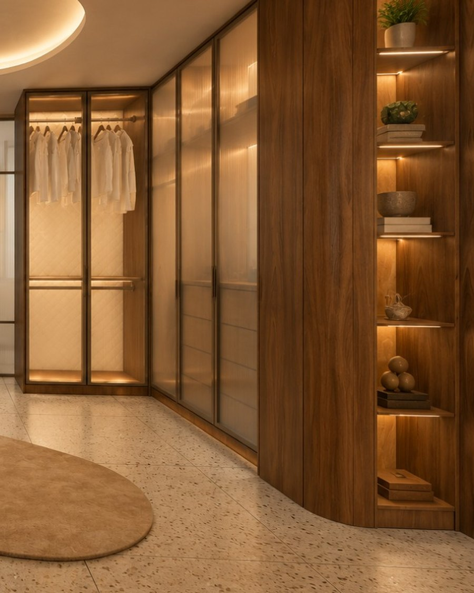
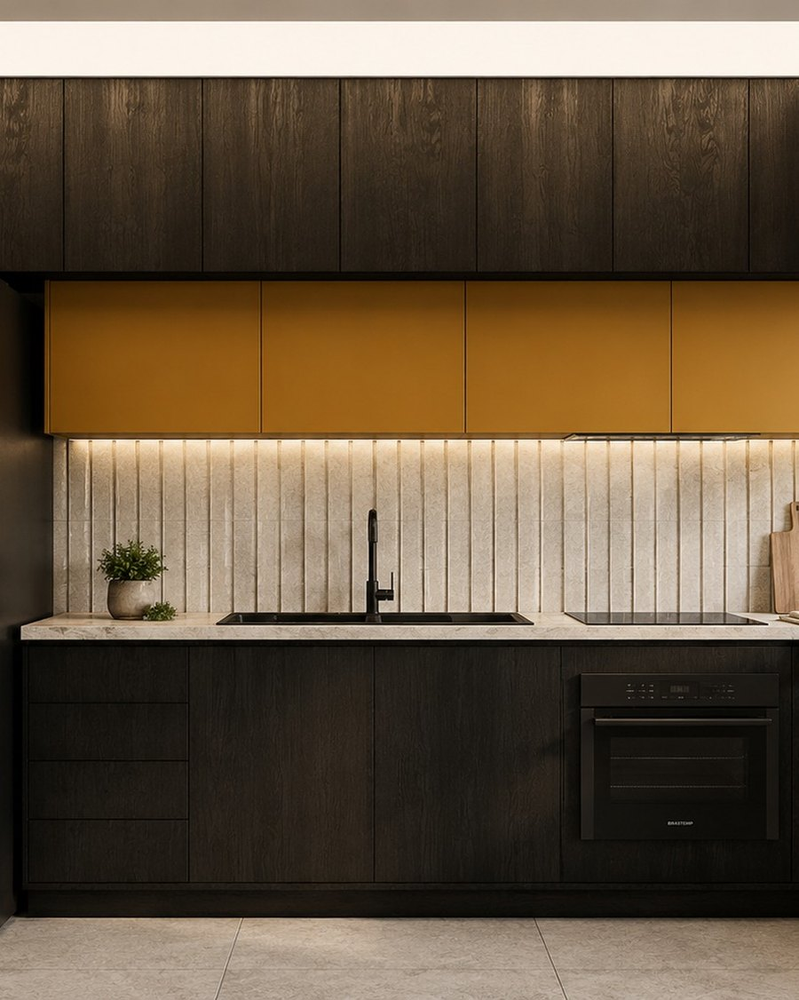
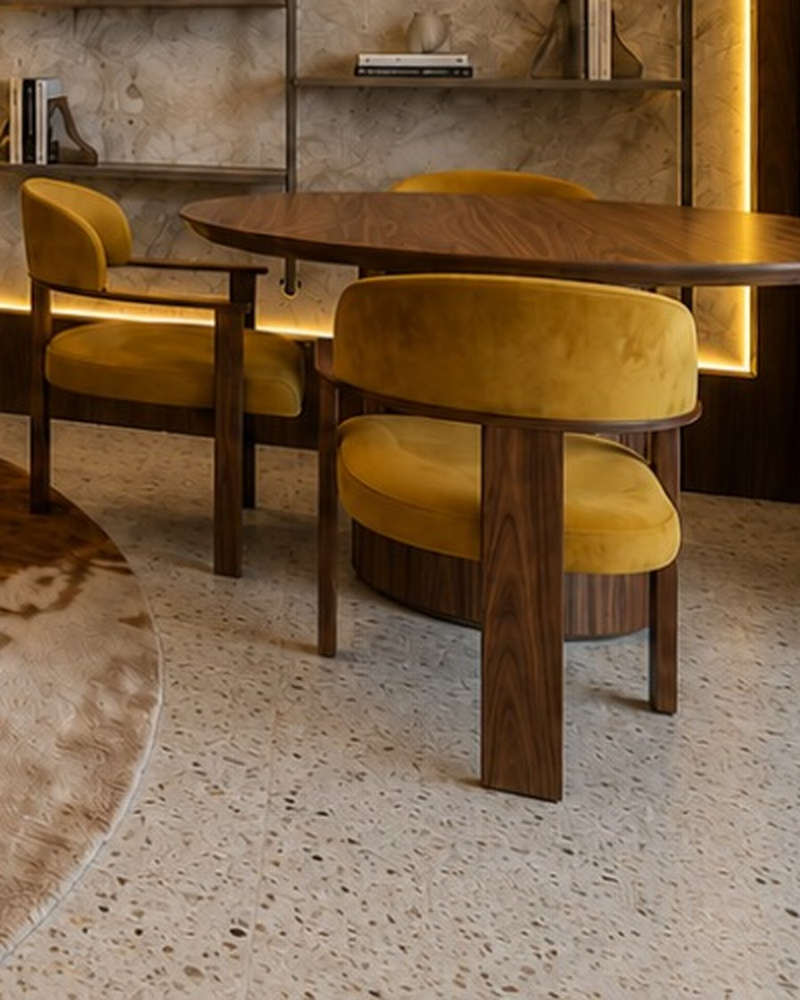

SB-01
Closet em Freijó com vidro acidato
Bartzen Ambientes Planejados

SB-04
Cozinha planejada com aéreo Ocre Solar
Bartzen Ambientes Planejados

SB-05
Sofá-cama Casulo
Casa Contente

SB-06
Poltrona Wooden Ball
Casa Contente

SB-08
Cadeira Évora
Casa Contente